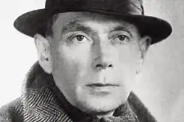

ЄВГЕН МАЛАНЮК
(1897 — 1968)
"НА ХРЕСТІ СЛОВА РОЗІП'ЯТИЙ…" Польща, 1922 рік. Містечко Каліш з передмістям Щипьорно. За колючими дротами таборів військовополонених майже десять тисяч інтернованих вояків армій Української Народної Республіки. Дерев'яні бараки, землянки, злигодні, голод, фронтові рани, сухоти, смерть. Пекуче усвідомлення втрати Батьківщини і майже цілковита відсутність надії на майбутнє... А на зібранні академії таборового літературно-артистичного товариства "Веселка" із, здавалося б, недоречним до часу і місця рефератом "Зброя культури" виступав перед побратимами двадцятип'ятилітній поет, військовий старшина 6-ї дивізії генерала Безручка Євген Маланюк: "Кордони, економічна діяльність, промисловість і торгівля — це тільки зовнішні форми, тільки рамки, в яких проходить дійсне живе життя нації самостійної держави. А цим дійсним життям нації, щирим змістом зовнішньої форми є внутрішнє життя національної культури, життя ідей безсмертних і вічних (і в першу чергу — мистецтво — авангард культури), бо історичні події, війни, перемоги й поразки, розквіти й упадки держав і народів, ціла рухлива маса історії є лише матеріалізацією тих чи інших ідей. Щоб повстала або зникла держава, мусить, перш за все, існувати ідея цього повстання або зникнення... Ідеї виростають й мужніють на підґрунті національної культури — от чому праця на царині культури є сьогодні хоч і запізненим, проте загальноукраїнським ділом... Дійсними творцями життя є мислителі, апостоли ідеї. Справжніми пророками історичних подій є Митці і, в першу чергу — поети". Навіть для частини учасників академії, — а "Веселка" об'єднувала літературно-мистецькі кола інтернованих вояків, — виступ Євгена Маланюка був дещо несподіваним. Адже табори продовжували жити за принципом військових формувань. Ідея нового походу за Державність все ще декларувалася військовим керівництвом, хоч на другому році життя таборових республік військовики все краще розуміли її примарність. І для багатьох усвідомлення цього ставало життєвою катастрофою. Поставало питання — що далі? Саме на нього і спробував відповісти у своєму рефераті Євген Маланюк. Осмислюючи причини поразки у збройних змаганнях за Державність, доповідач вбачає їх у надзвичайно вузькому колі провідників нації (державників), навіть у їхній непідготовленості до подій 1917 року, нарешті, у тому, що національній еліті бракувало теоретичного обгрунтування сутності і мети українського національного руху, його стратегії і тактики. Тож молодий письменник прагне стати одним із творців національної, державотворчої ідеї. Думки, висловлені в рефераті, невдовзі прозвучали і в його поезії. "На хресті слова розіп'ятий Цвяхами літер..." Це мимовільне поетичне зізнання, позначене далеким 1924 роком, стало пророчим щодо мистецької долі письменника і може служити епіграфом до всього його життя. Роком пізніше у поезії "Напис на книзі віршів", яку Євген Маланюк назвав в одному з листів "найкращим віршем моїм" (1931), поет увиразнив свою мистецьку і громадянську позицію. Звертаючись до нащадків і, здається, вже тоді усвідомлюючи, що шлях до читача на батьківщині буде неймовірно довгим, "напружений, незломно-гордий Залізних імператор строф" писав: Ось — блиском — булаву гранчасту Скеровую лише вперед: Це ще не лет, але вже наступ, Та він завісу роздере. Шматками розпадеться морок, І ти, нащадче мій, збагнеш, Як крізь тисячолітній порох Розгорнеться простір без меж. Збагнеш оце, чим серце билось, Яких цей зір нагледів мет, Чому стилетом був мій стилос І стилосом бував стилет. Протягом довгого і складного життя, зітканого із "переходів та ісходів", Євген Маланюк жодного разу не зрадив собі, не зрікся свого добровільного вибору, того хресного шляху, який пророкувала його розіп'ята душа. Свідчення тому — низка поетичних книг, історіософічні, культурологічні, публіцистичні, літературно-критичні статті, нариси. У поета, дослідника, публіциста Євгена Маланюка один адресат і один герой — Україна. І то однаково стосується як творів, у яких поет величає її степовою Елладою, так і тих, де митець з болем і гнівом назве Україну "Пріською гетьмана Петра". А починалася поетова Еллада-Україна з його дитинства, з маленького провінційного містечка Новоархангельська, загубленого в степу, якому Богом і людьми судилося протягом віків бути покордонням княжої Русі і половецького степу, Гетьманщини і Дикого поля, Запорожжя і Речі Посполитої. Містечко виникло як форпост у боротьбі проти панської Польщі. Споруджували його посланці козацьких полків і заселяли переважно козаки-зимівчани. Одним із них був предок письменника, що започаткував на берегах повноводної Синюхи нову павіть Маланюківського роду, витоки котрого, як згадував сам поет, велися десь із Покуття. Степовий край диктував поселенцям свій уклад життя. Дід Євгена Маланюка замолоду водив до Криму чумацькі валки, прожив без двох років століття і залишився у пам'яті Євгена "останнім чумаком архангородським", чудовим оповідачем козацьких легенд, чумацьких бувальщин. За свідченням самого письменника, дід був справжнім уособленням національно свідомого українця, котрому ...боліла в серці цілість Свого народу і отчизна — За всі ці чини і часи. Скребли покора і ледарство, Пекли каліцтво й рабство мертве, І раєм страченим минуле Вставало в присмерку століть. (Голоси землі, 1929) І коли вже дошукуватися першовитоків національно-патріотичних почуттів Євгена Маланюка, то в особі діда Василя маємо першого навчителя. Наприкінці 50-х років в одній із автобіографій поет писав, що в їхній хаті — на дві половини — у першій, дідовій, панував дух віків, а в другій, батьковій, — дух нової української інтелігенції, пробудженої 70 — 80-ми роками XIX століття, інтелігенції, що лише спиналася на ноги. Батько поета, Филимон Васильович, був досить колоритною постаттю в містечку. Не маючи за плечима ані університету, ані навіть гімназії, він, дякуючи природному розумові та самоосвіті, вибився у перший шерег архангородської інтелігенції. Був ініціатором фундації театру в місті, дбав про відкриття прогімназії, а згодом гімназії, активно дописував до повітових газет, кохався в історії. А ще старожили пам'ятають його повіреним містечкового суду, вчителем і... незмінним хористом церковної капели. Зусиллями батька в сім'ї була зібрана непогана бібліотека. Ця книгозбірня теж прислужилася майбутньому письменникові. Дружину Филимон Васильович узяв із збіднілої дворянської родини колишніх сербських осадчих. 2 лютого 1897 року молоде подружжя святкувало народження сина Євгена. Гликерія Яківна принесла в сім'ю (в оту другу, батькову, половину хати) традиції вмираючих "дворянських гнізд" — музику, поезію, замилування романтичною і класичною літературою. Можливо, саме через це в місцевій початковій школі Євген вигідно вирізнявся серед однокласників. Незважаючи на матеріальну скруту, батьки віддають свого первістка (Євген мав ще молодших братів: Сергія — 1898 року та Онисима — 1900 року народження) до повітового Єлисаветградського земського реального училища. Місто Єлисаветград у пору учнівства Євгена Маланюка було помітним культурним центром півдня Російської імперії. "Жодна зі столиць світу — ні Париж, ні Нью-Йорк не справили на мене опісля такого враження, як Єлисаветград", — писав у своїй автобіографії інший відомий краянин Л. Троцький. І хоч як парадоксально це звучить, але частка істини в тій емоційній оцінці, навіяній дитячими спогадами, все ж була. Єлисаветград мав могутні театральні традиції, і його не обминала жодна знаменита театральна трупа. Місто прийняло майже половину із 47 виставок художників-передвижників. Тут функціонувало з десяток гімназійних закладів. А земське реальне та громадське комерційне училища були відомі в усій імперії. Як свідчить сам Є. Маланюк, віршувати він почав ще гімназистом у 13 років. Безперечним стимулом до того стали серйозні гуманітарні традиції реальної школи: позакласне читання, живопис і театр були предметом особливої уваги педагогів. Саме на час учнівства припадає знайомство Євгена Маланюка з творчістю Шпільгагена, Амічіса, Рільке, Д'Орвільї, Уайльда, Гамсуна, По, Гюго, Верлена, Рембо, Ередіа, Метерлінка, Блока, Бєлого, Сологуба та інших позапрограмових письменників. У юнака сформувався справжній культ читання. Згодом, уже в Чехії, у листі до поетеси Наталі Лівицької-Холодної Євген Маланюк писав: "Преса — привичний наркоз, без якого я впадаю в апатію" (1928). А в 60-х роках поет говорив колезі Леоніду Полтаві: "Громадянство все менше читає, так знову просплять Україну... Нечитання вижене українців зі світу". 14 червня 1914 року серед вісімнадцяти випускників сьомого класу Єлисаветградського реального училища знаходимо й ім'я Євгена Маланюка. Мріючи про інженерну професію, він їде до столичного Петербурзького політехнічного інституту. Абітурієнт з провінції не поганьбив своєї школи. Його було зараховано на перший курс, але на перешкоді навчанню стала перша світова війна. Доля приводить хлопця до Київської військової школи, котру він закінчує 1 січня 1916 року. Далі запасний піхотний полк, а затим прапорщик Маланюк служить молодшим офіцером у кулеметній роті фронтової частини. Послужний список його по-військовому скупий і лаконічний: бої, відзнаки, підвищення у званні. За тими назвами і датами — криваві бої, поразки і перемоги, втрати бойових побратимів. Світова війна закінчилася для Євгена Маланюка в лютому 1918 року. Проте склалося так, що після короткої відпустки йому знову довелося воювати: він став на захист Української держави. На нього чекали ще три роки війни. Війни, у якій тричі доводилося здавати ворогові Київ, у якій був "кривавий листопад" 1919 року, коли внаслідок жорстоких боїв та тифу в сотнях залишалося 5 — 10 бійців, а полки нараховували 50 — 60 багнетів. А ще був 1920 рік, коли тридцятип'ятитисячне українське військо після десятиденних запеклих боїв було змушене 21 листопада о 17 годині віддати останній салют рідній землі і перейти польський кордон. ".../ пригадується найстрашніше. Безнадійно імлистий листопадовий день над Збручем. День, коли армія — згідно з якимсь там параграфом "міжнародного" права — віддавала зброю, — згадував пізніше Євген Маланюк.